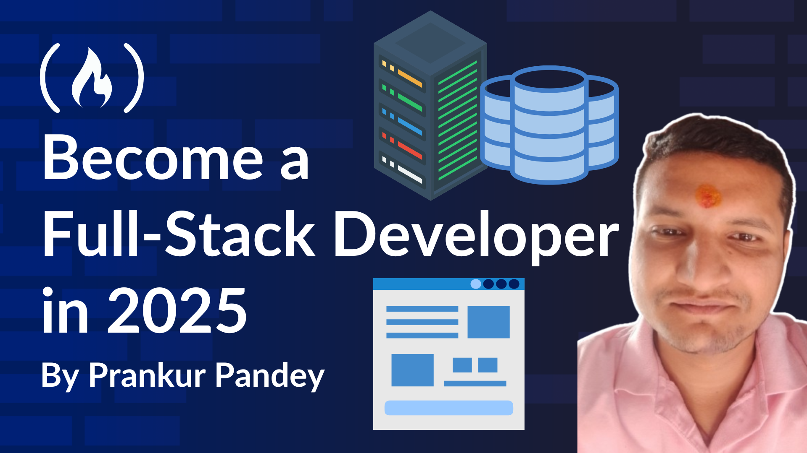

March 12, 2025 / #FULL STACK DEVELOPMENT
Prankur Pandey
Whenever I publish a new article, I receive countless emails and DMs across social media asking, "How can I become a Full Stack Developer like you? How much DSA do I need to know? How long does it take?"
Well, I always say, "Wait for my next tutorial!"—and here it is! This guide will walk you through everything I did to become a Full Stack Developer and how you can use the same approach to turn any idea into a real product.
I've recommended this approach to many developers before writing this article, and they were amazed at the results. Now, it's your turn. 🚀
I chose Full Stack Development because my journey began with frontend development, and, over time, I found myself naturally transitioning into backend development.
When I first started, frontend development felt like an uphill battle. I was completely new to the space, and every concept seemed complex. But with patience and relentless practice, I reached a stage where I could take any design and turn it into functional code. Around that time, React was dominating the industry. It was trending, and once I grasped its core concepts, it became an intuitive and powerful tool in my arsenal.
As I gained confidence in frontend development, I started exploring more. Full Stack Development initially felt overwhelming, so I took it step by step. I focused on mastering frontend first, diving deep into the nuances of building intuitive and responsive interfaces. Over time, I worked on multiple projects—six practice projects and over twenty client projects— before I even considered backend development.
The turning point came when I became fascinated with APIs and databases. I wanted to understand how data flowed between the frontend and backend, how a single logic could control server behavior, and how each new function I added shaped the backend's response. It was challenging yet incredibly rewarding. I found joy in debugging, optimizing, and making everything work seamlessly together.
It was during my job search that I had a realization: companies weren’t just looking for frontend developers – they valued devs who could handle backend development as well. Having backend skills not only made me more competitive but also helped me refine my frontend capabilities.
That’s when I decided that I wouldn’t limit myself to one side of development. To build complete, production-ready applications, I committed to mastering both frontend and backend, ensuring I could create seamless, full-fledged digital experiences.
Now, let’s dive into the technical details so you can get there, too.
When I first stepped into the world of coding, I was fascinated by how websites worked. Clicking a button, filling out a form, or watching animations unfold on a webpage felt almost magical.
But then, I had no idea about the complexity behind these interactions. I started with frontend development, where I learned how to design and build the visible part of applications—the user interface (UI) and user experience (UX).
Frontend development is all about what users see and interact with. It involves writing code to design layouts, animations, and interactive elements that create a seamless user experience. I started with HTML, CSS, and JavaScript, the foundational technologies of the web. But as I built more projects, I realized that modern frontend development had evolved far beyond basic web pages.
That’s when I discovered React.js—a JavaScript library that makes it easier to build dynamic, fast, and scalable web applications. Unlike traditional methods, React uses a component-based approach, where every part of the UI (buttons, forms, navigation bars) is reusable and managed efficiently.
After I learned React, I explored Next.js, a powerful framework built on React that enhances performance with features like server-side rendering (SSR) and static site generation (SSG), making applications load faster and helping them become more SEO-friendly.
To style my applications, I moved beyond traditional CSS and started using Tailwind CSS, a utility-first framework that allowed me to create beautiful designs without writing repetitive styles. Tailwind made my workflow more efficient, helping me focus on design without getting lost in excessive CSS files.
But frontend alone wasn’t enough. I wanted to understand what happened behind the scenes when I clicked a button or submitted a form. That curiosity led me to backend development.
Backend development is the backbone of any application. It handles data storage, authentication, business logic, and communication with databases and APIs. My journey into backend development started with Node.js, a runtime that allows JavaScript to run on servers, making it possible to build full-fledged applications using a single programming language.
As I explored deeper, I discovered NestJS, a progressive Node.js framework that brings structure and scalability to backend development. Unlike traditional Node.js setups, NestJS follows an opinionated architecture inspired by Angular, making backend code more modular, reusable, and maintainable.
I also worked with tRPC, a modern framework that eliminates the need for REST APIs by providing a type-safe way for frontend and backend to communicate seamlessly. This reduced development time, improved security, and ensured fewer errors in data transmission.
For data storage, I experimented with different databases:
Working with databases helped me understand the importance of efficient data modeling and how backend services interact with the frontend. But my learning didn’t stop there—I wanted to go beyond development and dive into the world of deployment and cloud infrastructure.
Building an application is one thing, but making sure it runs smoothly, scales under heavy traffic, and remains secure is another challenge. That’s where DevOps and cloud technologies come into play.
I learned about Docker, a containerization tool that allows applications to run in isolated environments, ensuring they work the same way regardless of where they are deployed. Then came Kubernetes, an orchestration system that automates the deployment and scaling of applications, making infrastructure management seamless.
To deploy and host my applications, I explored AWS (Amazon Web Services), which offers cloud computing solutions for hosting databases, servers, and entire applications with high availability and security. Understanding cloud platforms gave me the confidence to handle production-ready deployments, ensuring applications ran efficiently without downtime.
Looking back, the journey to Full Stack Development has been about taking ownership of the entire development lifecycle—from designing user interfaces to managing databases, optimizing performance, and deploying applications.
My role as a Full Stack Developer involves:
As AI started transforming the tech landscape, I became interested in integrating it into applications. I explored CopilotKit and LangChain, a framework that connects AI models with real-world applications, enabling features like chatbots, automated content generation, and intelligent decision-making. AI-powered applications fascinated me because they opened up endless possibilities—from predictive analytics to smart automation.
Becoming a Full Stack Developer isn’t just about learning different technologies. It’s about problem-solving, system design, and coding best practices. I had to understand how all these pieces fit together—how the frontend communicates with the backend, how databases store and retrieve data, how servers process requests, and how everything is optimized for performance.
I also learned that software development is not a solo journey. Collaboration with designers, backend engineers, DevOps teams, and clients is crucial. Writing clean, maintainable code and following best practices like code reviews, documentation, and testing became second nature.
The beauty of Full Stack Development is that it’s ever-evolving. New frameworks, tools, and best practices emerge constantly, and adapting to change is what makes this field exciting. What started as a simple curiosity about how websites work has now turned into a passion for building complex, scalable, and intelligent applications.
Every project I take on brings new challenges and learning opportunities, and that’s what keeps me motivated.
Full Stack Development is about both coding as well as solving real-world problems, creating impactful digital experiences, and continuously pushing the boundaries of what’s possible.
When I first started as a developer, my focus was purely on writing code. I built web applications, ensured smooth user experiences, and worked with databases. But the more I progressed, the more I realized that development was only half the battle. The real challenge came when I had to deploy my applications, manage servers, and ensure everything ran smoothly in a production environment.
This is where DevOps changed everything for me.
DevOps (a combination of Development + Operations) is a mindset that bridges the gap between developers and IT operations. It ensures that applications move smoothly from a developer’s local environment to a live server, running securely and efficiently.
Initially, I struggled with deployment. Writing code was one thing, but setting up servers, configuring environments, and handling cloud resources felt overwhelming. My first deployment experiences were frustrating—errors due to system differences, slow application performance, and unexpected crashes were common.
That’s when I realized I needed to master three essential DevOps concepts:
Most of the internet runs on Linux—it’s the backbone of servers, cloud platforms, and infrastructure management. But when I started, I had barely touched a Linux terminal. Everything seemed cryptic—the command line was intimidating, and I often wondered why developers preferred it over a simple graphical interface.